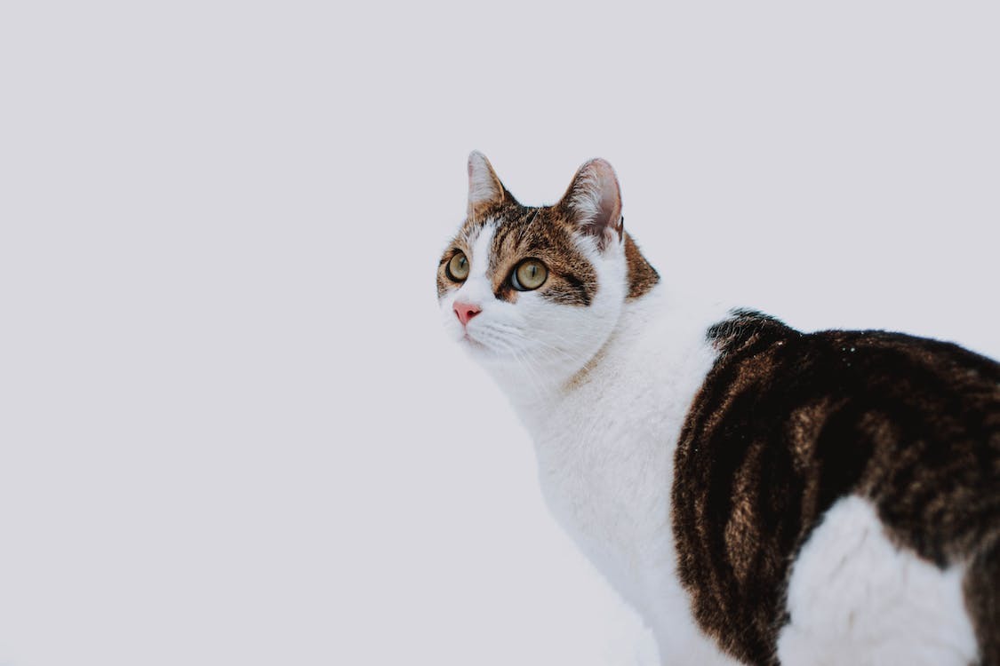

About
Meepland Studios is a made up animation studio which specializes in their main characters Meep, Plant, and Peef. Their animations mainly focus on creating cute shorts to inspire others. Meep, the main character, is often described as a forbidden jelly bean with excellent style. Meep is an alien from Meepland hence the name Meepland Studios. Plant and Peef are also important character who you can read more about below. More About Meep
Plant
Plant is a character who is just as he sounds; a plant. He lives in a plant pot and has other friends who are plants too. You can often find plant falling from his plant pot as he is very clumsy and loves to sleep. Some of Plant's favorite things include the sun, water, and fertilized soil. Read more about him and his character design here... More About Plant
Peef
Peef is an iguana who's dream is to be a dinosaur, specifically, a T-rex. He is almost always wearing his self-made T-rex mask to look like his favorite reptile. Unfortunately in doing so, Peef is often bullied and made fun of for his unique obession. More About Peef
